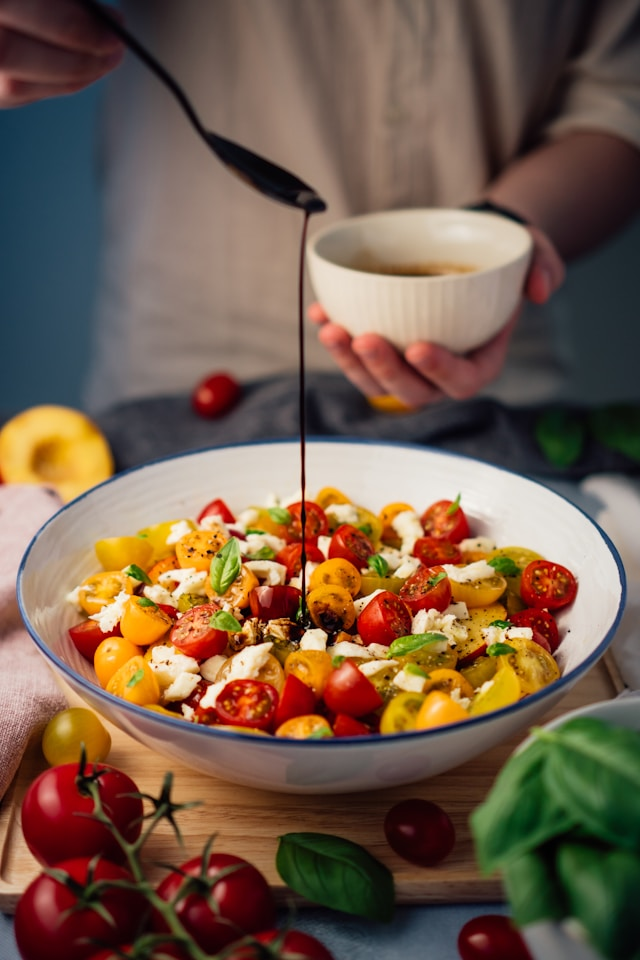

Caprese Salad

Description
Caprese Salad is a classic Italian salad made with fresh mozzarella cheese, ripe tomatoes, and basil leaves.
It is light, refreshing, and easy to prepare. The salad is typically dressed with olive oil and seasoned with salt and black pepper, making it a perfect appetizer or side dish.
Ingredients
- 3 large ripe tomatoes, sliced
- 200 grams fresh mozzarella cheese, sliced
- Fresh basil leaves
- 2 tablespoons extra virgin olive oil
- 1 tablespoon balsamic glaze (optional)
- Salt to taste
- Black pepper to taste
Steps to Follow
- Wash the tomatoes and basil leaves thoroughly.
- Slice the tomatoes and fresh mozzarella into even, round slices.
- Arrange the tomato and mozzarella slices alternately on a serving plate.
- Tuck fresh basil leaves between the tomato and mozzarella slices.
- Drizzle the salad evenly with extra virgin olive oil.
- If desired, drizzle balsamic glaze over the salad for additional flavor.
- Season with salt and freshly ground black pepper to taste.
- Serve immediately as a fresh appetizer or side dish with crusty bread.
Go Back to Home Page